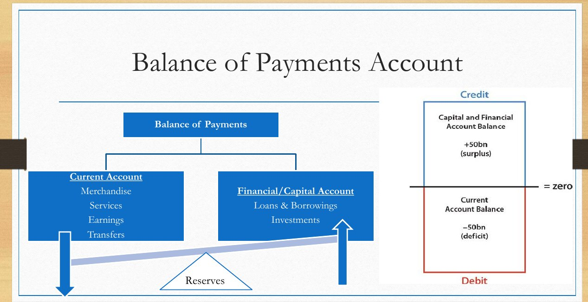
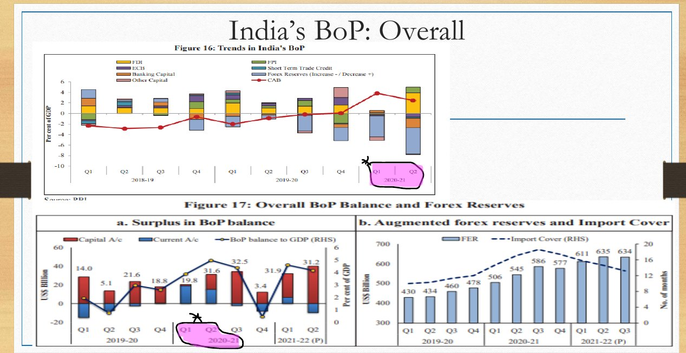
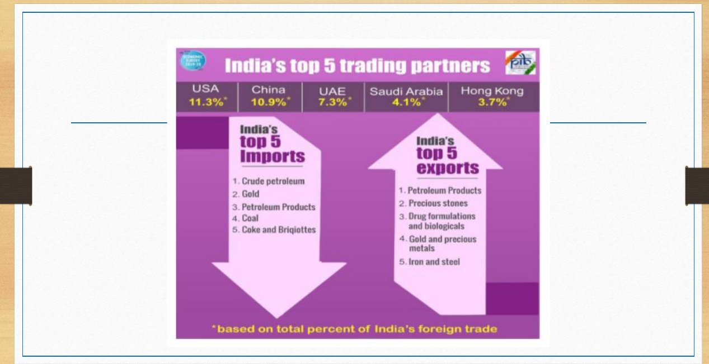
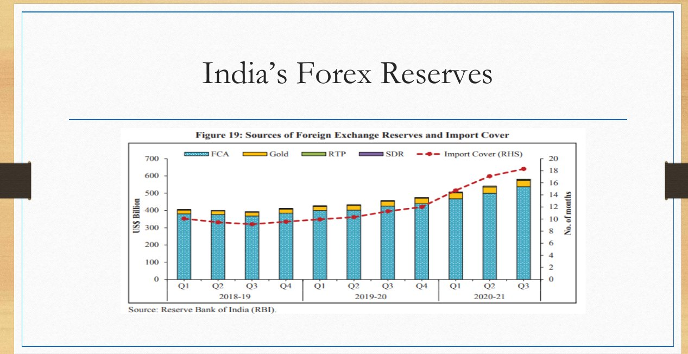
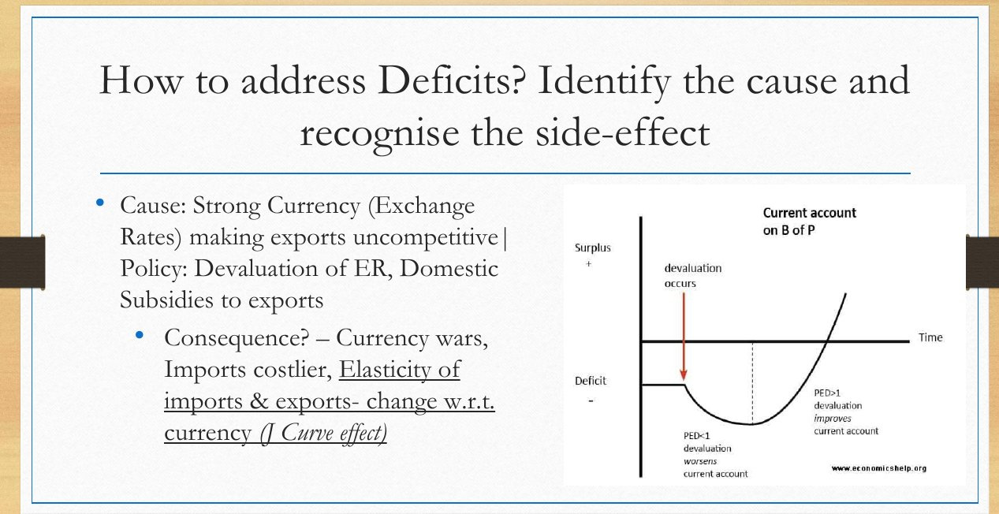

RBI’s forex purchases and sterilisation (MSS) link reserves to money supply; the impossible trinity is mentioned in both.
Economy · GS Foundation · Chapter 10
External Sector: BoP, Foreign Investment, Exchange Rates, CAD and IMF/World Bank
Class slides + handoutSlides 232-250, handout pages 1-47No PYQs quoted
How the BoP is built from forex transactions, autonomous versus accommodative entries, FDI versus FPI and FDI reforms, exchange rate systems and convertibility, nominal, real and effective exchange rates, why a CAD arises and how it is cured, the J-curve and currency wars, and the Bretton Woods institutions: World Bank Group and the IMF with SDRs.
Chapter map#
- External sector
BoP
- Residents vs non-residents; flows
- Double entry; credit and debit
- Authorised dealers → FETERS → RBI
- IIP is stock; BPM6 → BPM7
Structure
- Current: goods, services, incomes, transfers invisibles = last three
- Capital: debt, investments, others, reserves
- Accommodative: Δ reserves + E&O
Foreign investment
- FDI ≥ 10% equity; unlisted always FDI
- FPI < 10%; hot money
- 9 prohibited sectors
- Automatic route 90%+; CCEA above ₹5,000 Cr
Exchange rate
- Floating, fixed, pegged, managed float
- India: managed float since 1993
- Current-account convertible; capital partial
- Tarapore 1997, 2006
Effective rates
- NER, RER
- NEER, REER: indirect quote index 2015-16 = 100
- Rising = stronger rupee
CAD
- Demand, policy, supply, exchange rate
- Policy and trade-off
- J-curve VI 1.5×, VE 0.75×
- Currency wars
World Bank Group
- IBRD, IDA (1960)
- IFC, MIGA
- ICSID: India not a member
- President American
IMF
- Quota, 85%, US > 16%
- SDR; RTP
- SBA, EFF, ECF, RCF
- Conditionalities / SAPs
Exam lens: priority and PYQs#
What the class and the handout stress
| Signal | Where | Why it matters |
|---|---|---|
| Teacher’s pink oval and star on 2020-21 Q1-Q2 of the BoP charts | Slide 13 | The only marked data point in the deck: a current-account surplus quarter pair |
| BoP = record of flows between residents and non-residents; double entry; credits and debits | Handout 1-2 | Core accounting rules |
| Autonomous (above the line) versus accommodative (below the line): Δ reserves and errors and omissions | Handout 2 | The “balance” in BoP |
| FDI: 10% or more equity (unlisted: always FDI); FPI: below 10%; Arvind Mayaram Committee, 2013-14; 9 prohibited sectors; over 90% via automatic route | Slide 4, handout 3 | Numbers and lists |
| Managed float; current-account convertibility full, capital account partial; Tarapore Committees 1997 and 2006 | Slides 5-6, handout 3 | Classic Prelims |
| NEER and REER: RBI uses indirect quotes, base 2015-16 = 100; a rising index means a stronger rupee | Handout 3 | Marked as a “key UPSC trap” |
| J-curve and currency wars | Slide 16, handout 4 | Worked numbers (VI up 1.5×, VE down to 0.75×) |
| IMF: 191 members, quota, 85% decisions, US over 16%; SDR is not a currency; RTP; lending windows; World Bank Group: IBRD, IDA, IFC, MIGA, ICSID | Handout 5 | Institution facts |
1 · How a payment crosses a border, and how the BoP gets built#
The Balance of Payments (BoP) is the ledger of all economic transactions between residents and non-residents over a period (the handout calls it “the ultimate macroeconomic ledger of a nation”). Millions transact for selfish motives and do not report to the Commerce Ministry, but every one needs rupees converted into foreign currency or back, and that happens through Authorized Dealer (AD) banks who must report the value and purpose of every conversion to the RBI daily.
The handout’s mobile-cover example (₹20 Cr to China)
| Step | What happens |
|---|---|
| Order | A Delhi vendor buys 10 lakh covers at 20 Yuan each = 2 Crore Yuan. The buyer has rupees; the seller needs yuan |
| Step 1: vehicle currency | The buyer pays SBI about ₹20 Cr. The direct INR-yuan market is not deep, so SBI buys 20 lakh US dollars (assumed ₹100 per dollar). The US dollar is the universal bridge (vehicle currency) |
| Step 2: global banking network | SBI’s dollar account is with Bank of America (New York). SBI messages: transfer $20 lakh to the Chinese bank’s (SBS) account at Wells Fargo. SBS sells the dollars in the Chinese forex market (assumed 10 yuan per dollar) and credits 2 Cr yuan to the seller |
| Step 3: Nostro, Vostro, Loro | Nostro (“ours”): SBI’s view of its account in New York. Vostro (“yours”): Bank of America’s view of the same account. Loro (“theirs”): a third bank (PNB) referring to SBI’s New York account |
| Step 4: the gatekeeper | RBI regulates forex under FEMA, 1999. Only licensed ADs convert. They ask for a purpose code and upload daily to RBI through FETERS (Foreign Exchange Transactions Electronic Reporting System). RBI aggregates this into the BoP |
- RBI compiles the BoP on IMF standards: the current standard is BPM6; BPM7 was released in 2025 and is expected to be adopted by 2029.
- The BoP is a record of flows. The record of stocks is the International Investment Position (IIP), published along with it. Valuation changes appear in the IIP, not the BoP.
- Double entry: every transaction has two entries of equal value, a credit (+) and a debit (−); all entries sum to zero. Credit = export of real resources or reduction of foreign assets / increase of foreign liabilities (money entering). Debit = imports, or increase of assets / decrease of liabilities (money leaving). One-sided items (gifts) get offsetting transfer entries.
- Residents and non-residents are defined as in national accounts: by centre of economic interest, not nationality or legal criteria.
2 · Structure of the BoP: autonomous and accommodative#

Autonomous versus accommodative transactions
| Autonomous (“above the line”) | Accommodative (“below the line”) | |
|---|---|---|
| Motive | Self-interest choices of residents and non-residents; nobody controls them | Not self-interested; necessitated by the net balance above |
| Items | Current account; capital and financial account | Change in reserves (Δ Reserves) and Errors and Omissions (E&O) |
| Who acts | Individuals and firms | The central bank (RBI) |
A · The current account (settled transactions)
The current account tracks settled transactions that do not change assets or liabilities between residents and non-residents.
Current account components
| Part | Contents |
|---|---|
| 1.A.a Goods | Merchandise: textiles, electronics, intermediate goods, metals, coal, jewellery, non-monetary gold (not held as reserve) |
| 1.A.b Services | Transport, travel, communication, financial, IT, insurance, royalties and licence fees |
| 1.B Incomes | Compensation of employees; investment income (interest, dividends, profits): earned (+), paid (−) |
| 1.C Current transfers | Remittances into India (+), transfers from India (−); no quid pro quo |
| Invisibles | Services + incomes + transfers |
B · The capital (and financial) account: old classification
- 2.A Debt: borrowings (+), lendings (−), including principal repayments. Classified by interest rate (concessional versus commercial), currency (domestic versus foreign) and place (onshore versus offshore). Governments borrow concessionally from agencies like the World Bank; private firms at commercial rates. Total commercial debt owed by residents to non-residents is ECB (External Commercial Borrowing).
- Currency of denomination decides who bears exchange rate risk. The handout’s example: borrow in dollars when $1 = ₹90; if the dollar rises to ₹100, every ₹90 borrowed needs ₹100 to repay (before interest). Borrowing in rupees shifts the risk to the lender.
- Masala bonds: offshore rupee-denominated bonds an Indian entity issues in (for example) American markets; the exchange rate risk shifts to the buyer; they help global recognition and the internationalisation of the rupee. An FII buying Indian government bonds is debt taken onshore in rupees.
- 2.B Investments: by Indians abroad (−), by foreigners in India (+); withdrawal by foreigners is (−). Split into FDI and FPI.
- 2.C Others: banking capital, trade credits, NRI deposits.
- 2.D Reserves: under BPM6 reserve assets sit in the financial account, but because FEMA works on a current/capital binary, RBI’s standard presentation shows the change in reserves in the capital account.
C · Accommodative transactions: reserves and E&O
- If the net autonomous balance is a surplus (example: CAD $10 B but capital surplus $25 B = net surplus $15 B) RBI absorbs the excess foreign currency into reserves. In a net deficit RBI sells dollars from reserves. These are accommodating transactions.
- Why RBI cannot sit out: if an importer’s bank cannot find dollars it goes to RBI; if an exporter’s bank cannot find a buyer it sells to RBI. Without RBI the dollar could crash or spike. In an open economy the central bank is less autonomous.
- Mundell-Fleming trilemma (impossible trinity): a country cannot have all three of free capital flow, a fixed/managed exchange rate and independent monetary policy.
- Worked example: reserves $500 B; inflows $100 B and outflows $80 B on autonomous items, so reserves should rise by $20 B to $520 B. That is the “balance” in the BoP.
- Errors and Omissions: if the observed reserve change is $20.4 B against an expected $20 B, E&O = +$0.4 B balances it. Causes: timing mismatches, exchange rate moves in transit, unrecorded illegal capital flight.

3 · Slide data on India’s BoP (Economic Survey charts)#
The slide deck then shows RBI/Economic Survey charts for 2019-20 to 2021-22. They are charts, not text, so only the headline readings that the slides state are listed:
- Slide 3 (Table 6): major components of India’s BoP, 2019-20 to 2021-22, US$ billion (current account, merchandise trade balance, invisibles, capital account, FDI, FPI, loans, banking capital, errors and omissions, overall balance, forex reserves change).
- Slides 7-9 (trade balance): growth in exports and imports; the top 10 export commodities pie; the top 10 import sources and export destinations. Slide 19 gives India’s top 5 trading partners (share of foreign trade): USA 11.3%, China 10.9%, UAE 7.3%, Saudi Arabia 4.1%, Hong Kong 3.7%.
- Slide 10 (invisibles): services exports and imports; remittances; composition of net invisibles (services, transfers, income).
- Slides 11-12: current account balance and its composition; FDI and FPI trends (FPI remained volatile); capital account composition.
- Slide 18: sources of forex reserves (FCA, gold, RTP, SDR) and import cover (months).


4 · Foreign investment: from poverty of capital to the control test#
The history (handout)
- 1950s-80s: absolute poverty; near-zero domestic savings made domestic investment impossible; food dependence on the US PL-480; the 1962 war, and Shastri’s 1965 “Jai Jawan, Jai Kisan” call to skip a meal. Foreign capital was needed but offered on draconian terms: partner with an Indian firm, source 60% locally, no repatriation of profits. The LPQ (License, Permit, Quota) Raj made allocation depend on connections. Suzuki’s entry for Maruti in the 1980s needed political manoeuvring.
- 1991: the BoP crisis (threat of sovereign default, IMF pressure) led to the LPG reforms. The mindset shift stayed slow: as late as 2012 the government demanded 30% local sourcing from Apple, and Apple walked away.
- Reforms listed: 1991 opening, 2000 FDI liberalisation, 2013 new policy, 2016 liberalisation, 2020 foreign investment conditions; the handout ties them to post-nuclear-test isolation, the 2013 US Fed tapering, demonetisation’s bad press, and the 2020 supply-chain shock.
FDI versus FPI (slide 4 and handout)
| FDI (Foreign Direct Investment) | FPI (Foreign Portfolio Investment, formerly FII) | |
|---|---|---|
| Control | Intention to exercise control: 10% or more equity | No intention to exercise significant control: less than 10% |
| Nature | Long term, stays through downturns; brings money and technology | “Hot money”: cashes out when targets are met or losses mount; money only |
| Exchange rate | Stable | Large inflow or outflow may cause sharp appreciation or depreciation |
| Regulation | Sectoral limits (mostly liberalised); multiple approvals (sectoral regulator, Home, Defence, Environment); earlier FIPB and CCEA; now mostly automatic | Instrumental limits (mostly liberalised); regulators RBI and SEBI; less cumbersome |
| Example | Honda building cars; Budget 2021: insurance FDI limit 74% from 49% | FIIs buying Indian stocks and government bonds |
Why the old test failed: earlier the split was by perceived intent (the old term was FII), which was subjective: some “FDI” investors left like hot money and some “FII” funds stayed for decades. In 2013-14, on the Arvind Mayaram Committee, India adopted an objective “significant control” test (IMF/OECD).
The 10% rule (handout)
| Case | Classification |
|---|---|
| Foreign owner holds 10% or more of equity in a listed Indian company | FDI |
| Foreign owner holds less than 10% of a listed company | FPI |
| Any foreign investment in an unlisted private company or startup | Always FDI, whatever the percentage |
| Equity only counts: 5% equity + 20% of debt | FPI (equity below 10%); the debt follows ECB / FPI-debt rules |
| Compulsorily convertible instruments (CCPs, CCDs) | Treated as equity today: the 10% is on “post-issue paid-up equity capital on a fully diluted basis” |
| An FPI like BlackRock crosses 10% in a listed company | That investment is reclassified as FDI; BlackRock itself stays registered as an FPI |
- The term FII now only describes a class of investors (large funds like BlackRock, Vanguard, KKR). In 2014 SEBI legally erased the term: FIIs, sub-accounts and Qualified Foreign Investors merged into Foreign Portfolio Investors (FPIs).
- FDI is subject to sectoral regulation (Defence, Insurance, Telecom limits), apart from SEBI and RBI financial-market rules.
FDI reforms and the present regime
- Almost every sector open to the Indian private sector is open to foreigners except 9 prohibited sectors: 1 lottery, 2 gambling and betting (including casinos), 3 chit funds, 4 Nidhi companies, 5 trading in Transferable Development Rights (TDRs), 6 real estate business (pure buying and selling of land for profit), 7 manufacture of tobacco products, 8 atomic energy, 9 railway operations (except certain infrastructure).
- Limits go up to 100% in several sectors. Budget 2021: insurance FDI raised to 74% from 49%.
- Automatic route: over 90% of FDI comes this way. No prior approval; inform RBI within 30 days of bringing the money. A foreigner faces the same regulations as an Indian.
- Government (approval) route: sensitive sectors need the Ministry’s prior approval through the Foreign Investment Facilitation Portal (FIFP). Any foreign investment above ₹5,000 Crore needs CCEA approval. The FIPB has been abolished.
- Defence example: up to 74% in a joint venture is automatic (the JV applies to the Ministry of Defence); 100% needs CCEA approval, given on bringing state-of-the-art technology. Print media: FDI capped at 26% (the Ministry of Information and Broadcasting steps in at the control line).
- Greenfield = investment in a new entity (e.g. Kia building a new factory in Andhra Pradesh). Brownfield = investment in an existing entity (e.g. Walmart acquiring Flipkart).
- FPI is money; FDI is marriage: the entity is regulated, not the investor. Fit and proper: when a Japanese bank like Mitsui wanted a 20% stake in an Indian bank, it crossed the 10% line and RBI would test its track record, ultimate beneficial owners and financial stability. A 6% FPI holding (the handout’s Vanguard in Yes Bank example) barely registers.
5 · Exchange rates: demand, supply and quotes#
An exchange rate (ER) is the price of one currency in terms of another. Neither the US Fed nor the RBI dictates it in India; millions of buyers and sellers do.
- Direct quote: $1 = ₹90 (price of foreign currency in domestic units). Indirect quote: ₹1 = $(1/90) ≈ $0.011.
- Demand for dollars (a minus on the autonomous BoP): importers; income outflows (interest and dividends abroad); capital flight (FPIs selling stocks); citizens abroad (tourists, students).
- Supply of dollars (a plus on the autonomous BoP): exporters; foreign investors (FDI, FPI); borrowings (ECBs); remittances and tourism.
- The ER is where D$ meets S$. A crude oil price surge raises demand for dollars and the dollar becomes costlier (₹90 to ₹95); a flood of foreign investment raises supply and the dollar becomes cheaper.
Exchange rate systems
The four systems (handout; slide 5 for the first three)
| System | What it is | Terms and examples |
|---|---|---|
| Floating (market based) | The ER is set by demand and supply; no intervention; free movement of foreign currency; needs a deep forex market | Appreciation / depreciation (automatic) |
| Fixed | An authority sets a rigid rate and enforces it. A cheap fixed dollar (₹40 against a market ₹90) would explode demand, so the central bank must sell reserves (finite) or restrict demand (import bans, limits on profit repatriation and remittances). This breeds illegal channels and black markets (Hawala) and shields inefficient domestic producers | Devaluation / revaluation. Slide 5: ways to fix: control demand or supply of foreign currency; peg to a stable commodity (gold standard pre-World War); peg to another currency through currency boards |
| Pegged (a variant of fixed) | A country without a deep forex market pegs to a large trading partner’s or neighbour’s currency | Bhutan’s ngultrum and Nepal’s rupee pegged to the INR (Bhutan 1:1); UAE dirham and Hong Kong dollar pegged to the US dollar |
| Managed float (dirty float, mixed) | Largely floating, but the central bank intervenes on certain objectives (e.g. volatility) | India follows a managed float. RBI does not target a specific value (₹82 or ₹85); its sole aim is to curb excessive volatility by selling or buying dollars. The handout objects to the term “dirty float” as pejorative |
Evolution of India’s exchange rate system (handout)
| Period | System |
|---|---|
| 1947 - 1971 | Par Value System: rigidly pegged to the US dollar |
| 1971 - 1975 | Pegged to the UK pound sterling |
| 1975 - 1992 | Pegged to a basket of currencies |
| 1992 - 1993 | LERMS (Liberalized Exchange Rate Management System): dual-rate transition |
| 1993 - present | VERS (Voluntary Exchange Rate System) / managed float; rupee fully convertible on the current account |
Convertibility of the rupee
- Convertibility is the legal ease of swapping domestic and foreign currency. Non/partially convertible (restrictions on amount or purpose) is a hallmark of fixed regimes; fully convertible needs no RBI permission.
- Before 1993 the rupee was rigidly fixed and restricted. Today it is 100% convertible on the current account. On the capital account it is partially convertible: FDI and FPI are free, but there are limits on corporate ECBs and on resident Indians sending capital abroad (LRS limits). So the rupee is “partly convertible (or almost fully convertible)”.
- Tarapore Committees (1997 and 2006) on full capital account convertibility concluded it is too dangerous until India fixes its fiscal deficit and bank NPAs. Slide 6: the Tarapore recommendation is a graded move towards full convertibility: control of fiscal deficit, control over inflation, shoring up the government’s ability to repay debts, controlling gross NPAs of banks. The 2nd Tarapore Committee further recommended: raising ECB limits, relaxations for NRIs, abolition of Participatory Notes.
External debt (slide 8)
- External debt includes: sovereign debt, ECBs, FII debt, multilateral debt, Masala bonds, and (proposed) sovereign debt bonds.
- Most foreign debt is denominated in US dollars, followed by INR-denominated debt; most is of long-term maturity (the slide points to an article for detail).
6 · Nominal, real and effective exchange rates#
The absolute level (₹80 or ₹150 per dollar) is “largely irrelevant”; the movement decides trade competitiveness.
Depreciation versus appreciation (direct quote)
| Depreciation | Appreciation | |
|---|---|---|
| Rupee | Loses value; $1 moves from ₹80 to ₹90 | Gains value; $1 moves from ₹90 to ₹80 |
| Imports | Costlier, discouraged | Cheaper |
| Exports | Cheaper for foreigners, encouraged | Costlier, uncompetitive |
Nominal versus real exchange rate
| Nominal ER (NER) | Real ER (RER) | |
|---|---|---|
| Meaning | Market price: what exporters actually receive, importers actually pay (e.g. $1 = ₹80) | Inflation-adjusted ER: RER = NER × (PF ÷ PD) |
| Why it matters | Its movement affects trade | Inflation also moves competitiveness: with NER fixed at ₹80, India’s 10% inflation against the US 5% raises the price of Indian exports |
| Handout numbers | NER ₹80; PF = 105; PD = 110 | RER = 80 × 105 ÷ 110 ≈ ₹76 (below NER: the rupee is “actually stronger”, imports rise, exports fall) |
| The fix | Let NER depreciate to ₹85 | RER = 85 × 105 ÷ 110: the handout says “~₹80” (the arithmetic gives about ₹81), restoring competitiveness |
Effective Exchange Rate (EER): the weighted average of an ER over a basket of partner currencies, with weights from each partner’s share of India’s trade. NEER = weighted average of bilateral nominal rates. REER = NEER adjusted for inflation differentials.
7 · Current Account Deficit: causes, cures and side effects#
CAD arises when outgo on the current account exceeds inflow, mostly imports above exports. CAD = VI − VE. A deficit is not inherently evil: for a developing country needing capital machinery it is often unavoidable. The test is sustainability: quality of financing (stable FDI is sustainable; volatile FPI or expensive ECB is not) and reserve adequacy (the handout says 6 to 8 months of import bill).
Reasons for high imports and low exports
| High imports | Low exports |
|---|---|
| High domestic income growth; dependency on natural resources (crude, APIs); low import tariffs; insufficient domestic production capacity; high inflation (domestic goods dear, imports cheap); strong exchange rate | Poor manufacturing base (EODB, taxes, infrastructure, investment); recession abroad; depletion of natural resources; poor quality; high inflation; strong exchange rate |
Slide 14 (causes of deficits): demand side: strong domestic growth, weak foreign growth or recession abroad, strong exchange rate. Supply side: low investment, low productivity, high relative inflation, high labour costs, poor quality of exports, depletion of resources. The slide also flags “*Dutch Disease?” with no explanation in the slides or the handout, so none is given here.
Four groups of reasons, the policy and its trade-off (handout table and slides 15-17)
| Reason | Policy | Consequence or trade-off |
|---|---|---|
| 1 · Demand side: high incomes; inelastic necessities (crude, APIs); the “gold sinkhole” (gold imports lock wealth in vaults, drain forex without productive use); growth itself raises luxury imports | Demand reduction: contractionary fiscal or monetary policy; import restrictions (tariffs, bans) | The “sledgehammer”: lower growth, higher unemployment and poverty, loss of business confidence. Restrictions breed illegal channels; imports continue and government loses tax revenue |
| 2 · Policy side (tariffs): cheap imports; high taxes on domestic goods. Inverted Duty Structure (IDS): tax on finished goods is below tax on intermediates, so importing the finished good is cheaper than assembling | Impose tariffs, quotas; raise import taxes, cut taxes on domestic goods, subsidise producers | Retaliation, costly, inflationary, WTO violation, higher prices for consumers; exports in pharma, petroleum, electronics, gems become uncompetitive because they use imported intermediates |
| 3 · Supply side: poor infrastructure, EODB, low R&D, disasters | Supply-side policy: invest in infrastructure; improve EODB, contract enforcement, compliance, land acquisition; skilling; quality checks (Zero Defect, Zero Effect); Production Linked Incentive (PLI) schemes | Long term, costly, no guarantee; all must be achieved together. “Easier said, impossible to do” |
| 4 · Strong exchange rate: makes imports cheap and exports dear | Devaluation of the currency; domestic subsidies to exports | Currency wars, imports costlier, the J-curve effect (below) |
The investment paradox and the opportunity cost trap
- To fix the supply side a country must invest (ports, highways, power), sacrificing present welfare (healthcare, education, subsidies) for future returns. The “China illusion”: a highway generates exceptional returns only if synchronised with the “software”: EODB, contract enforcement, land, flexible workforce, talent. Without them the nation suffers the opportunity cost but gets mediocre gains.
- Winner-takes-all race: India, Vietnam, Sri Lanka and Egypt compete for factories leaving China or the US; global firms (Apple, Foxconn) choose a single destination. Losers are left with debt and empty industrial parks.
- Reality check: Southeast Asian nations opened earlier and have superior infrastructure, so India “is desperately racing to catch up”. It is a case that investment alone is not enough.
8 · The J-curve and currency wars#

Devaluation is expected to cut imports and raise exports. But CAD = VI − VE where VI = PI·QI and VE = PE·QE. Upon devaluation PI rises (so QI falls) and PE falls (so QE rises). The net effect depends on elasticities.
The handout’s worked numbers (inelastic imports and exports)
| Imports | Exports | |
|---|---|---|
| Price | PI doubles: PI′ = 2 PI | PE halves: PE′ = PE / 2 |
| Quantity | QI falls to 0.75 QI (falls, but less) | QE rises to 1.5 QE (rises, but less) |
| Value | VI′ = 2 × 0.75 = 1.5 VI (import bill rises) | VE′ = 0.5 × 1.5 = 0.75 VE (export revenue falls) |
- So VI up and VE down: CAD worsens first. The inelasticity assumption is generally true for India: imports are necessities (crude, pulses, APIs) and exports are inelastic in the short term (foreign buyers weigh convenience, trust, quality, payment terms, shipping, and competitors cut prices too).
- Countries still devalue hoping that in the medium to long term imports fall and exports rise enough to correct the CAD: the J-curve effect.
Currency wars (competitive devaluation)
- India devalues; CAD worsens immediately (the downward stroke of the J).
- Just as exports become competitive, China devalues the yuan and the advantage is wiped out.
- India devalues again from a deeper deficit; then Vietnam devalues; India drops again: a series of cascading drops.
Result: CAD worsens perpetually, capital flees, reserves are bled dry, inflation crushes the population; the country becomes indebted on terms that may undermine sovereignty. A “beggar thy neighbour” policy leaves everyone a beggar. Under a floating system the CAD causes depreciation automatically; no one sees it as an unfair advantage, so there is no retaliation: floating acts as an automatic stabiliser of CAD.
9 · International institutions: cooperation and Bretton Woods#
- International institutions facilitate cooperation among countries that compete for national interest (tariffs, retaliation, devaluation, war). Game theory (John von Neumann, then John Nash): when each player acts aggressively for its own maximum payoff, all can end worse off (“race to the bottom”); the Nash Equilibrium needs mutually acceptable rules. The handout uses the Iran-Israel-US matrix as a modern illustration.
- Bretton Woods Conference, 1944 (44 countries): after two World Wars, which the handout says were fundamentally caused by economic desperation, competitive devaluations and colonial debt traps (underlying cause: the BoP). The handout’s example: the East India Company did not conquer Bengal with an army; the Nawabs defaulted and signed over the Diwani; British goods paid zero duty in India while Indian goods faced around 200% in Britain.
- Keynes (UK) wanted a neutral global central bank and a stateless currency, the “Bancor”. Harry Dexter White (USA) demanded a US dollar (gold-backed) anchor and voting power proportional to contributions (the US held about 80% of central-bank gold). White’s vision prevailed.
Three questions, three pillars
| Problem | Answer |
|---|---|
| BoP crisis manager: stop a country going bankrupt and being conquered | International Monetary Fund (IMF) |
| Rules of the game: stop tariff wars | The International Trade Organization (ITO) was proposed and failed; it became the WTO in 1995 |
| The builder: rebuild war-torn Europe and finance newly independent colonies | World Bank (IBRD) |
The IMF and the World Bank, born together, are the “Bretton Woods Twins”.
10 · The World Bank Group#
- “World Bank” strictly means IBRD + IDA; the World Bank Group (WBG) has five institutions. Goals by 2030: end extreme poverty (people living on less than $2.15 a day to no more than 3% of the world’s population) and promote shared prosperity (income growth of the bottom 40% in every country).
- Governance: voting by shares, not one country one vote; the USA is the largest shareholder with large veto power over major changes. Board of Governors (usually finance ministers, meets annually); 25 Executive Directors in Washington D.C. approve loans; the President is always an American nominated by the US (the IMF head is always a European).
Five pillars of the World Bank Group
| Institution | Function | Funding and borrowers |
|---|---|---|
| IBRD (International Bank for Reconstruction and Development) | The original; long-term, favourable-commercial loans to middle-income and creditworthy low-income countries for infrastructure | Issues World Bank bonds (AAA rating) in global markets; major borrowers: India, Indonesia, Brazil, Turkey |
| IDA (International Development Association), 1960 | Concessionary window: zero to very low interest “credits” and grants to the poorest; repayment 30 to 40 years | Funded by donor contributions, replenished every three years; beneficiaries: Sub-Saharan Africa (Nigeria, Ethiopia), Bangladesh. India graduated from IDA in 2014 and is now only an IBRD borrower (formerly a “Blend” nation) |
| IFC (International Finance Corporation) | Private sector arm: lends directly to private corporations. Most transformative role: credit guarantee (credit enhancement) because a firm’s rating is capped by its sovereign rating (the “sovereign ceiling trap”: an Indian corporate pays say 7% instead of 4% in the US) | AAA-rated; also pioneers local currency financing (e.g. rupee Masala bonds) to reduce exchange rate risk |
| MIGA (Multilateral Investment Guarantee Agency) | Insurance arm: Political Risk Insurance for foreign investors against expropriation, breach of contract, war and civil disturbance, currency inconvertibility | Reduces fear of policy instability |
| ICSID (International Centre for Settlement of Investment Disputes) | International arbitration of disputes between foreign investors and host states | India is NOT a member: it sees bypassing the domestic judicial system as infringing sovereignty and insists on exhausting domestic remedies first |
- Flagship publications: World Development Report (WDR); Global Economic Prospects (bi-annual); Logistics Performance Index (LPI); the Ease of Doing Business index was discontinued and is being replaced by B-READY.
11 · The IMF: functions, quota, SDR and lending#
The IMF (conceived July 1944 at Bretton Woods) works for sustainable growth and prosperity of its 191 members through three missions: international monetary cooperation, expansion of trade and growth, discouraging harmful policies. It monitors global financial flows and puts out BoP crises before they cause a global meltdown.
Core functions
| Function | Details |
|---|---|
| Surveillance | Monitors exchange rates, capital flows, reserve adequacy. Article IV consultations: mandatory annual health-checks on every member; publications: World Economic Outlook (WEO), Fiscal Monitor, Global Financial Stability Report (GFSR) and country reports |
| Capacity building | Technical assistance to central banks on inflation and tax policy |
| Lending | Lender of last resort when a country runs out of foreign currency |
- Structure like a fund: owner = 191 member countries; objective = stability of the global financial system; fund manager = Executive Board of 25 Executive Directors + 1 Managing Director (26 since 2024); contributors = members by quota; corpus = total contributions.
- Quota is set by size of economy, forex reserves, openness to trade. It fixes (1) subscription, (2) voting power (not one country one vote; proportional to quota; major decisions need an 85% supermajority, which gives the United States (over 16%) a veto), and (3) borrowing limits (a multiple of quota).
- Votes: Fixed Votes are shared equally among members (to protect small countries); Quota-Based Votes follow each country’s share of total quota (if India’s quota is 4 of 100, it gets 4% of QBV). Executive Directors represent groups: the Indian Executive Director represents India, Bhutan, Bangladesh and Sri Lanka with combined voting power of about 3.5%. Most decisions are by simple majority; quota reforms need 85%.
- Quota reforms are due every 5 years but are slow; the handout says India now contributes more than its quota requires as a signal.
How subscriptions work, SDR and RTP
- The subscription (numerically equal to the quota) is counted in SDRs, which the country buys from the IMF. 75% is paid in domestic currency (rupees); 25% in freely usable foreign currency or gold (USD, JPY, RMB, EUR, GBP). SDR holdings count as forex reserves.
- The 25% foreign-currency part can be withdrawn unconditionally, also counted in reserves: the Reserve Tranche Position (RTP), “kind of an interest free loan”.
- Forex reserves = gold + foreign currency assets (cash and foreign government bonds) + SDR holdings + RTP.
What an SDR is
| SDR (Special Drawing Rights) | Meaning |
|---|---|
| Not a currency | Not a medium of exchange: a country cannot buy goods with SDRs |
| Not a claim on the IMF | A country cannot sell SDRs back to the IMF for currency |
| Definition | A potential claim on freely usable currencies with other IMF members; a reserve asset created to supplement reserves |
| Who can hold | Member countries and prescribed holders (IMF, World Bank, European Central Bank) |
| Position on joining | Holdings (asset) = IMF’s liability to the country; allocations (liability) = what the country owes. They are equal at the start, so no net interest; the IMF sets the interest rate weekly |
How it works in a crisis: country X (Sri Lanka in the handout’s example) sells its holdings to a surplus country Y (Germany) at the SDR price and gets the currency it needs. X’s holdings fall below its allocations and it pays net interest to the IMF; Y’s rise above and it earns interest from the IMF. Y is willing to lend because the IMF pays and guarantees repayment: the IMF is a risk management entity spreading risk across all members. When X exhausts its SDRs it can ask for more: the IMF can create SDRs out of thin air, raising holdings and allocations equally. Until this point the IMF has not lent a rupee from its corpus.
Direct IMF lending windows (after SDRs and RTP are exhausted)
| Facility | For | Terms |
|---|---|---|
| Extended Credit Facility (ECF) | Low-income nations; funded by the Poverty Reduction and Growth Trust (PRGT) | Zero-interest; long-term support for deep structural BoP problems |
| Rapid Credit Facility (RCF) | Low-income nations | Emergency, fast, limited conditions (natural disasters, COVID-19) |
| Stand-By Arrangement (SBA) | Middle and high-income nations; market-related interest | Short-term (1-2 years) for cyclical BoP crises; most loans lie here |
| Extended Fund Facility (EFF) | Middle and high-income nations | Longer (3-4 years) for deep structural weaknesses (the handout cites Pakistan’s repeated bailouts) |
- Conditionalities / Structural Adjustment Programs (SAPs) on SBA and EFF, released in tranches: fiscal austerity, higher taxes, slashed subsidies, privatisation of PSUs, removal of price controls. Seen as a gross infringement on sovereignty; the handout also notes allegations of bias (EU defaulters get fewer conditions than South Asian countries).
- Before lending, the IMF often consults the FATF to check the borrower is not a hub for money laundering or terror financing.
Timeline and numbers#
- Bretton Woods Conference (44 countries): IMF and World Bank.★
- Par value system: rupee pegged to the US dollar.
- IDA established.
- Rupee pegged to the pound sterling.
- Rupee pegged to a basket of currencies.
- BoP crisis; LPG reforms.★
- LERMS dual rate; then VERS / managed float from 1993.★
- WTO comes up (the ITO’s successor).
- First Tarapore Committee on capital account convertibility.★
- FEMA replaces earlier foreign exchange law.
- Second Tarapore Committee.★
- Arvind Mayaram Committee: 10% control test; SEBI erases the term FII (2014).★
- India graduates from IDA.
- Budget 2021: insurance FDI cap 74% from 49%.★
- BPM7 released (adoption expected by 2029).
Connects to#
FPI, ADR, GDR, IDR and P-Notes belong to capital flows recorded in the BoP.
AD banks report to RBI; NPAs are a Tarapore precondition.
Residents and non-residents follow the SNA concept; net exports are part of GDP.
Higher relative inflation raises the REER and hurts exports; devaluation is inflationary.
Taxes on domestic goods and the Inverted Duty Structure link to export competitiveness.
Recall sheet#
Read once, hide it, then rebuild the chapter from memory.
- BoP = flows between residents and non-residents; ADs report to RBI (FETERS); double entry; stocks in IIP; BPM6 now, BPM7 by 2029.
- Current account: goods, services, incomes, transfers (invisibles = last three). Capital: debt, investments, others, reserves. New capital account is narrow.
- Autonomous (above the line) versus accommodative (Δ reserves, E&O). Impossible trinity.
- FDI ≥ 10% (unlisted always FDI); FPI < 10%; Mayaram Committee 2013-14; 9 prohibited sectors; automatic route 90%+; FIPB abolished; CCEA above ₹5,000 Cr; insurance 74%.
- Exchange rate systems: floating, fixed, pegged, managed float. India: VERS since 1993. Current account fully convertible; capital partly. Tarapore 1997 and 2006.
- Dollar from ₹90 to ₹80 = rupee appreciation. RER = NER × PF/PD. NEER/REER: indirect quotes, base 2015-16 = 100, rising = stronger rupee.
- CAD = VI − VE. Reserves 6-8 months of imports. Demand, policy (IDS), supply, exchange rate causes.
- J-curve: PI×2, QI×0.75 → VI×1.5; PE÷2, QE×1.5 → VE×0.75. CAD worsens first. Currency wars.
- World Bank Group: IBRD, IDA (1960; India graduated 2014), IFC, MIGA, ICSID (India not a member). President American; IMF head European.
- IMF: 191 members, quota → subscription, votes, limits; 85% decisions, US > 16%; SDR (not a currency); RTP; SBA 1-2 y, EFF 3-4 y; conditionality.
Test yourself#
Practice questions below are written from the handout. They are not past-year questions.
Quick quiz
0 / 0 correct
Mains practice: answer skeletons
Try the answer on a blank page first, then open the skeleton.
Explain how the Balance of Payments is constructed. Distinguish autonomous and accommodative transactions.
Intro: The BoP is a double-entry record of flows between residents and non-residents.
- Authorised dealers report each conversion with purpose to RBI (FETERS); IMF standard BPM6.
- Current account: goods, services, incomes, transfers; capital account: debt, investments, others, reserves.
- Autonomous items rarely sum to zero; Δ reserves and E&O balance them.
- Impossible trinity explains why the central bank must accommodate.
Closing line: The balance in the BoP is struck by the central bank.
Distinguish FDI from FPI. Why is FDI preferred for financing a CAD?
Intro: The modern test is significant control: 10% or more of equity in a listed company.
- FDI long-term, brings technology; FPI hot money causing exchange rate swings.
- Mayaram Committee 2013-14; unlisted investments always FDI; FII merged into FPI in 2014.
- Reforms: 9 prohibited sectors, automatic route 90%+, FIPB abolished, CCEA above ₹5,000 Cr.
- A CAD funded by FDI is sustainable; one funded by FPI is not.
Closing line: FPI is money; FDI is marriage.
Discuss the causes of India’s CAD and the policy options with their trade-offs.
Intro: CAD is imports above exports; a deficit is not evil if sustainably financed.
- Demand side: incomes, crude and APIs, gold; cure is demand reduction with a growth cost.
- Policy side: tariffs and the inverted duty structure; cure risks retaliation and WTO violation.
- Supply side: infrastructure, EODB, PLI; long term, costly, no guarantee.
- Exchange rate: devaluation brings the J-curve and currency wars.
Closing line: Every cure for CAD has a cost; the right one depends on the cause.
Why does devaluation not always improve the current account? Explain the J-curve and currency wars.
Intro: The effect depends on elasticities of imports and exports.
- Inelastic trade: VI up 1.5 times, VE down to 0.75 in the handout’s numbers.
- CAD worsens first; hope of later recovery is the J.
- Competitors devalue in response; each round starts from a deeper deficit.
- A floating rate acts as an automatic stabiliser of CAD.
Closing line: In a currency war there are only beggars.
Critically examine the functioning of the IMF and World Bank in the light of the Bretton Woods order.
Intro: They emerged from Bretton Woods 1944 to prevent the competitive devaluations and debt traps of the past.
- IMF: surveillance, lending, quota-based votes, SDRs, SBA and EFF; US veto at 85%.
- World Bank Group: IBRD, IDA, IFC, MIGA, ICSID; American president and European IMF head.
- Conditionalities (SAPs) and alleged bias in treatment of borrowers.
- Slow quota reform; India’s contribution above its quota as a signal; India outside ICSID.
Closing line: Institutions of cooperation still reflect the power of those who built them.
Flashcards
Tap the card to flip.